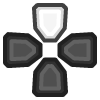
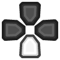
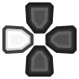
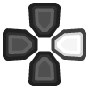

A PS2 emulator for Android, iOS, Windows, MacOS and Linux, written in C++.
The Play! core supports OpenGL rendering.
The Play! core has been authored by
The Play! core is licensed under
A summary of the licenses behind RetroArch and its cores can be found here.
Content that can be loaded by the Play! core have the following file extensions:
RetroArch database(s) that are associated with the Play! core:
Frontend-level settings or features that the Play! core respects.
| Feature | Supported |
|---|---|
| Restart | ✔ |
| Screenshots | ✔ |
| Saves | ✔ |
| States | ✔ |
| Rewind | ✕ |
| Netplay | ✕ |
| Core Options | ✔ |
| RetroAchievements | ✕ |
| RetroArch Cheats | ✕ |
| Native Cheats | ✕ |
| Controls | ✔ |
| Remapping | ✔ |
| Multi-Mouse | ✕ |
| Rumble | ✕ |
| Sensors | ✕ |
| Camera | ✕ |
| Location | ✕ |
| Subsystem | ✕ |
| Disk Control | ✕ |
| Username | ✕ |
| Language | ✕ |
| Crop Overscan | ✕ |
| LEDs | ✕ |
The Play! core has the following option(s) that can be tweaked from the core options menu. The default setting is bolded.
Settings with (Restart) means that core has to be closed for the new setting to be applied on next launch.
Resolution Multiplier [play_res_multi] (1x|2x|4x|8x)
Controls the internal resolution of the graphics, significant performance impact if your GPU is not powerful enough for certain resolutions.
Presentation Mode [play_presentation_mode] (Fit Screen|Fill Screen|Original Size)
Change layout to Fit Screen, Fill Screen or Original Size.
Force Bilinear Filtering [play_bilinear_filtering] (enabled|disabled)
Enable bilinear filtering.
| User 1 - 8 input descriptors | RetroPad Inputs | PlayStation Controller Inputs | DualShock Inputs | Analog Controller Inputs | Analog Joystick Inputs | neGcon Inputs |
|---|---|---|---|---|---|---|
| Cross |  |
 |
|
|
|
Analog button I |
| Square |  |
 |
|
|
|
Analog button II |
| Select |  |
 |
|
|
|
|
| Start |  |
Start | ||||
| D-Pad Up |  |
 | D-Pad Up | |||
| D-Pad Down |  |
 | D-Pad Down | |||
| D-Pad Left |  |
 | D-Pad Left | |||
| D-Pad Right |  |
 | D-Pad Right | |||
| Circle |  |
A | ||||
| Triangle |  |
 |
|
|
|
B |
| L1 |  |
 |
|
|
|
Left shoulder button (analog) |
| R1 |  |
 |
|
|
|
Right shoulder button (digital) |
| L2 |  |
 |
|
|
|
Analog button II |
| R2 |  |
 |
|
|
|
Analog button I |
| L3 |  |
 |
||||
| R3 |  |
 |
||||
| Left Analog X |  X X |
Left Joystick X | Twist | |||
| Left Analog Y | Y |
Left Joystick Y | ||||
| Right Analog X |  X X |
Right Joystick X | ||||
| Right Analog Y | Y |
Right Joystick Y |
Play! core is still experimental but promising. Some games are already playable.